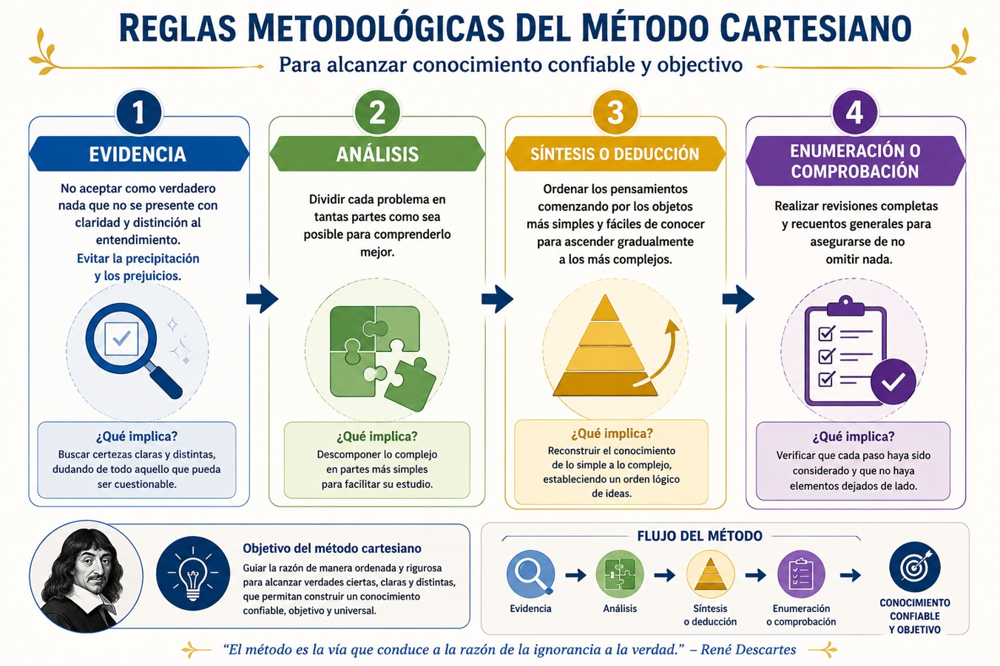
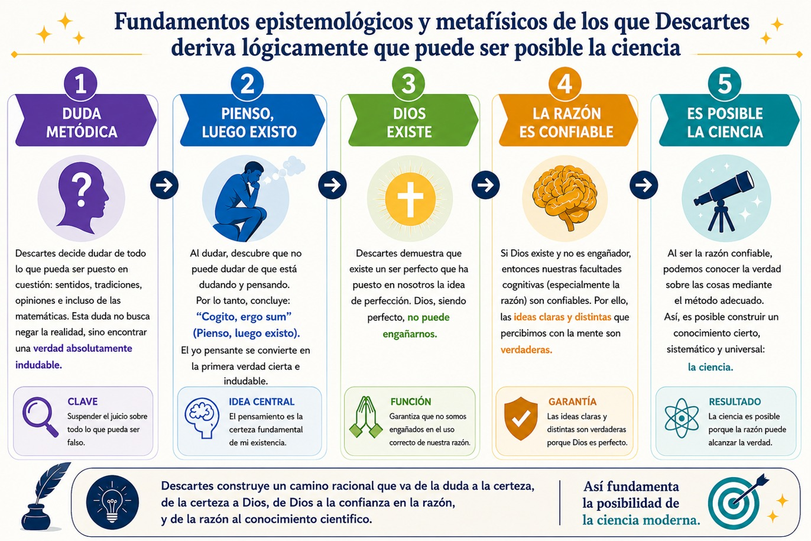

Antes de adentrarnos en el paradigma de la complejidad, vamos a revisar brevemente qué es un paradigma y qué es lo que implica. Según Thomas Kuhn en su libro La estructura de las revoluciones científicas, un paradigma es el conjunto de ideas, teorías, conceptos, métodos, valores y formas de ver el mundo que comparte una comunidad científica en un determinado momento histórico. Un paradigma funciona como un marco de referencia que orienta qué problemas son importantes, cómo deben investigarse y qué se considera una explicación válida.
De manera sencilla, un paradigma puede entenderse como unos “lentes” a través de los cuales los científicos observan e interpretan la realidad en un momento histórico determinado. Estos lentes determinan qué aspectos se consideran relevantes y cuáles pasan desapercibidos. Por ejemplo, durante siglos la astronomía estuvo dominada por el paradigma geocéntrico, que afirmaba que la Tierra era el centro del universo. Más tarde, el paradigma heliocéntrico propuesto por Nicolás Copérnico transformó completamente la manera de comprender el sistema solar.
Según Kuhn, la ciencia no avanza de forma acumulativa y lineal, sino mediante revoluciones científicas. Una revolución sucede cuando un paradigma ya no puede explicar ciertos fenómenos o anomalías y surge entonces una crisis que eventualmente puede conducir a la aparición de un nuevo paradigma. Así ocurrió con el paso de la física clásica de Isaac Newton a la teoría de la relatividad de Albert Einstein.
En síntesis, para Kuhn un paradigma es un modelo compartido de pensamiento que guía la producción del conocimiento científico y que, en determinados momentos históricos, puede ser reemplazado por otro cuando deja de explicar adecuadamente la realidad. Por ello, los paradigmas no son verdades eternas, sino formas históricas de comprender el mundo.
Ahora bien, el denominado paradigma de la complejidad, desarrollado de manera sistemática por Edgar Morin en obras como Introducción al pensamiento complejo, representa una de las transformaciones epistemológicas más significativas del pensamiento contemporáneo en el siglo XX. Este paradigma surge como respuesta crítica a las limitaciones del modelo clásico desde distintas disciplinas científicas, pues este se basaba en la simplificación, la fragmentación del conocimiento y la pretensión de certeza absoluta. Frente a ello, la complejidad propone una nueva forma de comprender y aprehender la realidad, haciendo énfasis en la articulación de múltiples dimensiones, aceptando la incertidumbre y reconociendo la interdependencia entre los fenómenos.
En términos generales, el paradigma de la complejidad no constituye una teoría cerrada ni un sistema acabado, sino un enfoque abierto que busca replantear las condiciones mismas del conocimiento. Su objetivo no es eliminar la simplicidad, sino integrarla en una visión más amplia que permita comprender la riqueza y la heterogeneidad del mundo. En este sentido, la complejidad no debe confundirse con lo complicado. De hecho, se trata de un principio organizador que reconoce que los fenómenos están constituidos por múltiples elementos interrelacionados, cuya dinámica no puede reducirse a explicaciones lineales.
Uno de los puntos de partida del paradigma de la complejidad es la crítica al pensamiento simplificador. La ciencia moderna desde el siglo XVII, se fundamenta en tres operaciones básicas: la disyunción (separar lo que está unido), la reducción (explicar lo complejo por lo simple) y la abstracción (aislar los fenómenos de su contexto). Durante siglos estas operaciones permitieron importantes avances científicos, sin embargo también generaron una visión fragmentada de la realidad, incapaz de dar cuenta de fenómenos complejos como la vida, la conciencia o la sociedad. Así pues, para decirlo con Morin, este tipo de conocimiento produjo una “inteligencia ciega” que pierde de vista las conexiones fundamentales entre los elementos que estudia.
Por el contrario, el paradigma de la complejidad propone un pensamiento que distinga sin separar y que una sin reducir. Esto implica reconocer que los fenómenos están constituidos por relaciones, interacciones y retroacciones que configuran sistemas dinámicos. Así, la realidad es concebida como un tejido (complexus) en el que se entrelazan múltiples dimensiones: lo físico, lo biológico, lo social, lo cultural (simbólico). Este enfoque rompe con la división rígida entre disciplinas y promueve una perspectiva transdisciplinaria del conocimiento.
Ahora bien, un elemento central del paradigma de la complejidad es la incorporación de la incertidumbre como dimensión constitutiva del conocimiento. A diferencia del paradigma clásico, que buscaba eliminar la incertidumbre mediante la formulación de leyes universales, la complejidad reconoce que el conocimiento es siempre parcial, incompleto y situado. Esta idea se vincula con los desarrollos de la ciencia del siglo XX, como la física cuántica y la teoría del caos, que pusieron en evidencia los límites del determinismo y la imposibilidad de predecir completamente el comportamiento de los sistemas.
Asimismo, el paradigma de la complejidad introduce una nueva concepción de la causalidad. En lugar de una causalidad lineal, en la que una causa produce un efecto de manera directa, se propone una causalidad circular o recursiva, en la que los efectos retroactúan sobre las causas. Este principio de retroalimentación permite comprender cómo los sistemas se autoorganizan y evolucionan a partir de sus propias dinámicas internas y de su interacción con el entorno. De este modo, la complejidad no solo describe la realidad, sino que también ofrece herramientas para pensar procesos de cambio y transformación.
Otro aspecto fundamental es la relación entre orden y desorden. El paradigma clásico de la ciencia tiende a privilegiar el orden como principio explicativo, considerando el desorden como una anomalía o un error. Sin embargo, el pensamiento complejo reconoce que el desorden es una dimensión constitutiva de la realidad y que, lejos de ser negativo, puede ser fuente de creatividad e innovación. La complejidad surge precisamente de la interacción entre orden, desorden y organización, en un proceso dinámico y no lineal.
En este contexto, la noción de sistema abierto adquiere una importancia central. Los sistemas complejos no son entidades cerradas, sino que mantienen intercambios constantes con su entorno. Esta apertura implica que su estabilidad depende de flujos de energía, materia e información, y que su organización está en permanente transformación. La vida, por ejemplo, puede entenderse como un proceso de auto-eco-organización, en el que los organismos se constituyen a partir de su interacción con el medio.
El paradigma de la complejidad también tiene implicaciones éticas y políticas. Al reconocer la interdependencia de los fenómenos, invita a superar visiones fragmentadas de la realidad y a asumir una responsabilidad global frente a los problemas contemporáneos. Cuestiones como la crisis ambiental, la desigualdad social o los conflictos culturales no pueden ser abordadas desde enfoques reduccionistas, sino que requieren una comprensión compleja que integre múltiples dimensiones.
En suma, como veremos más adelante, el paradigma de la complejidad representa un cambio profundo en la manera de concebir el conocimiento y la realidad. No se trata de reemplazar un paradigma por otro de manera absoluta, sino de transformar las formas de pensar, integrando la simplicidad en un marco más amplio que reconozca la complejidad del mundo. Este enfoque no ofrece certezas definitivas, pero sí abre nuevas posibilidades para comprender y actuar en un entorno cada vez más incierto y dinámico.
- Kuhn, T. S. (2013). La estructura de las revoluciones científicas (4.ª ed.). Fondo de Cultura Económica.
- Morin, Edgar (1998). Introducción al pensamiento complejo. Barcelona: Gedisa.
Te recomendamos ver estos videos para profundizar sobre este tema:
Nociones del pensamiento complejo.
El surgimiento de las nociones del pensamiento complejo, tal como fueron sistematizadas por Edgar Morin en Introducción al pensamiento complejo, no puede entenderse como un acontecimiento aislado ni como una invención repentina. Por el contrario, constituye el resultado de un largo proceso histórico de transformaciones en la ciencia, la filosofía y la cultura occidental, marcado por tensiones entre simplificación y complejidad, orden y desorden, certeza e incertidumbre. Esto se puede abordar a través de una breve genealogía histórica de estas nociones: la hegemonía del paradigma clásico, su crisis en la modernidad tardía y la emergencia de un nuevo horizonte epistemológico.
El paradigma clásico se consolida a partir del siglo XVII con el desarrollo de la ciencia moderna, particularmente con figuras como René Descartes, Isaac Newton y Galileo Galilei. En este contexto, el conocimiento se organiza bajo principios de disyunción (separar sujeto y objeto), reducción (explicar lo complejo por lo simple) y determinismo (suponer que todo fenómeno obedece a leyes universales).
Se conoce como el método cartesiano a la propuesta filosófica y metodológica de René Descartes para conocer o acercarse el conocimiento rompiendo con las formas tradicionales basadas en la autoridad religiosa, en su Discurso del método (1637), establece que esta nueva forma de conocer está basada en cuatro reglas metodológicas principales reconocidas como procedimiento para alcanzar conocimiento confiable y objetivo:
1. Evidencia: No aceptar como verdadero nada que no se presente con claridad y distinción al entendimiento. Evitar la precipitación y los prejuicios.
2. Análisis: Dividir cada problema en tantas partes como sea posible para comprenderlo mejor.
3. Síntesis o deducción: Ordenar los pensamientos comenzando por los objetos más simples y fáciles de conocer para ascender gradualmente a los más complejos.
4. Enumeración o comprobación: Realizar revisiones completas y recuentos generales para asegurarse de no omitir nada.
Puedes consultar el método en el siguiente diagrama:

Además de ello, este método está basado en cinco fundamentos epistemológicos y metafísicos que lo justifican:
1.- Duda metódica: Consiste en poner en duda todo aquello que pueda ser falso, esto implica cuestionar lo que perciben nuestros sentidos pues éstos pueden engañarnos; así mismo con las opiniones que pueden ser erróneas y tradiciones que pueden ser falsas.
2.- Principio de la existencia (Cogito): suponiendo que se ha puesto en duda todo aquello que pueda ser falso, entonces surge algo que no se puede poner en duda: el sujeto que está dudando y de eso surge su famosa expresión Cogito, ergo sum que significa "Pienso, luego existo", es decir, que aunque todo lo demás pudiera ser falso, el acto mismo de pensar demuestra que existe alguien que piensa.
3.- Existencia de Dios: Una vez demostrada su propia existencia, Descartes intenta demostrar la existencia de Dios. Su argumento principal es: i) Tengo la idea de perfección; ii) Yo soy imperfecto; iii) Un ser imperfecto no puede producir por sí mismo la idea de perfección absoluta, y; iv) Por tanto, esa idea proviene de un ser perfecto: Dios. Aunque hoy este argumento es muy discutido, en su sistema filosófico cumple una función esencial: esta afirmación significa que aunque todo lo demás pudiera ser falso, el acto mismo de pensar demuestra que existe alguien que piensa.
4.- Veracidad de las ideas innatas: Una vez demostrada la existencia de un Dios perfecto, se desprende lógicamente que el hombre tiene ideas innatas que le han sido dotadas por Dios y que son parte de la razón humana y no dependen de la experiencia propia, ideas como Dios, Número, Extensión y Sustancia todas ellas ideas claras y distintas entre ellas. Este principio derivó lógicamente que no todo conocimiento procede de los sentidos.
5.- Método analítico: Ya garantizada la confiabilidad de la razón, entonces propone su método para investigar cualquier problema: i) aceptar solo lo evidente; ii) dividir el problema, iii) ordenar de lo simple a lo complejo, y iv) verificar los resultados. Y finalmente este es el procedimiento que posteriormente influirá en la ciencia moderna.
Los fundamentos están explicados en el siguiente gráfico:

Como puedes observar, Descartes, propone el método en que se basará la ciencia moderna que, en principio plantea, dividir los problemas en partes simples para facilitar su comprensión, lo que favoreció el avance científico, pero también fragmentó el conocimiento. Este enfoque permitió la construcción de modelos altamente eficaces en física y matemáticas, donde el universo era concebido como una máquina regida por leyes claras y previsibles.
En términos generales, diremos que esta forma de hacer ciencia se basa en el pensamiento lineal que se caracteriza por su confianza en la razón como instrumento privilegiado para alcanzar la verdad, o dicho de otro modo, la certidumbre. Desde esta perspectiva, la realidad puede ser comprendida mediante procedimientos racionales que permitan eliminar la incertidumbre y alcanzar conocimientos objetivos. El ideal científico moderno se fundamentó precisamente en esta convicción de que el mundo posee un orden racional susceptible de ser descubierto mediante el análisis riguroso.
Otra característica fundamental es el reduccionismo analítico. El método cartesiano sostiene que los problemas complejos pueden comprenderse descomponiéndolos en elementos más simples. Así, el conocimiento avanza mediante la fragmentación de los fenómenos en unidades más pequeñas y manejables. Este procedimiento permitió el desarrollo de disciplinas especializadas y la profundización del conocimiento en campos específicos, pero también favoreció la separación entre áreas del saber que originalmente formaban parte de una misma realidad.
El pensamiento lineal se caracteriza también por una concepción causal de tipo secuencial. Los fenómenos son entendidos como cadenas de causas y efectos donde cada acontecimiento tiene una explicación identificable y relativamente estable. Esta lógica supone que si se conocen las causas de un fenómeno será posible predecir sus consecuencias.
Desde esta perspectiva, la realidad aparece como un mecanismo ordenado y predecible. El determinismo se convierte entonces en una consecuencia lógica del pensamiento cartesiano: los acontecimientos ocurren porque existen causas específicas que los producen. En las ciencias naturales este enfoque permitió formular leyes universales capaces de explicar y predecir fenómenos físicos con gran precisión. Y al ser las ciencias sociales las que se institucionalizaron después, siguieron este método tal cual estaba siendo aplicado para estudiar los fenómenos biológicos y físicos.
Otra característica importante del pensamiento lineal es la tendencia a la especialización disciplinaria. Al dividir la realidad en partes cada vez más pequeñas, el conocimiento se organiza en disciplinas relativamente autónomas que estudian aspectos específicos de los fenómenos.
Este proceso ha generado importantes beneficios, como la profundización técnica y la acumulación sistemática de conocimientos. Sin embargo, también ha producido una fragmentación del saber que dificulta comprender las conexiones existentes entre fenómenos económicos, políticos, culturales, biológicos y ambientales.
Sin duda, el rasgo más importante de este tipo de hacer ciencia ha sido la separación entre sujeto y objeto pues el observador es concebido como una entidad externa que puede estudiar la realidad de manera objetiva sin verse afectado por ella. Esta concepción fortaleció los ideales de neutralidad y objetividad científica, pero también invisibilizó el papel que desempeñan la experiencia, la cultura y el contexto en la producción del conocimiento.
A pesar de las críticas contemporáneas, el pensamiento lineal continúa siendo una herramienta valiosa para el análisis de numerosos problemas. La ingeniería, las matemáticas, la lógica formal y buena parte de las ciencias experimentales siguen utilizando procedimientos derivados del método cartesiano debido a su capacidad para ordenar la información, identificar relaciones causales y construir explicaciones.
Sin embargo, y sobre todo, cuando esta lógica se traslada al estudio de fenómenos sociales aparecen ciertas limitaciones. Problemas como la pobreza, la violencia, las migraciones o el cambio climático difícilmente pueden explicarse mediante una única causa, ya que involucran múltiples factores que interactúan simultáneamente. No obstante, durante mucho tiempo las ciencias sociales adoptaron modelos inspirados en esta visión lineal buscando identificar causas únicas o predominantes para explicar fenómenos complejos.
Así se descubrió que este modelo científico implicaba una reducción de la realidad a dimensiones cuantificables, dejando fuera la incertidumbre, la ambigüedad y la interacción entre fenómenos. Como señala Edgar Morin, este paradigma produjo una “inteligencia ciega” incapaz de comprender la complejidad de lo real. La separación entre disciplinas, la hiperespecialización y la búsqueda de certezas absolutas se convirtieron en rasgos dominantes del conocimiento moderno.
A finales del siglo XIX y, sobre todo, en el siglo XX, el paradigma clásico comenzó a mostrar sus límites. Diversos avances científicos cuestionaron la idea de un universo completamente ordenado y determinista. En la física, la teoría de la relatividad de Albert Einstein y la mecánica cuántica desarrollada por Werner Heisenberg introdujeron la incertidumbre, la probabilidad y la relatividad del observador como elementos centrales del conocimiento.
Estos desarrollos revelaron que el espacio y el tiempo no son absolutos, y que a nivel microscópico la realidad no puede describirse de manera determinista. La noción de partícula, por ejemplo, dejó de ser una entidad simple para convertirse en un fenómeno complejo, sujeto a múltiples interpretaciones. Así, la ciencia comenzó a reconocer que el orden no es la única dimensión de lo real, sino que coexiste con el desorden y el azar.
Además, en otros campos del saber surgieron enfoques que enfatizaban la interrelación y la organización. Por ejemplo, la Teoría de Sistemas, impulsada por Ludwig von Bertalanffy, propuso entender los fenómenos como sistemas abiertos en interacción con su entorno y la Cibernética, desarrollada por Norbert Wiener, introdujo el concepto de retroalimentación, mostrando que los sistemas pueden autorregularse mediante bucles de información. Posteriormente, la teoría de la información y los avances en biología molecular (como el descubrimiento del ADN) permitieron comprender la vida como un proceso organizado, dinámico y complejo. Estos enfoques coincidían en un punto fundamental: la realidad no puede reducirse a elementos aislados, sino que debe entenderse en términos de relaciones, procesos y organización.
- Morin, Edgar (1998). Introducción al pensamiento complejo. Barcelona: Gedisa.
Te recomendamos ver estos videos para profundizar sobre este tema:
El pensamiento relacional, la incertidumbre, la retroalimentación.
Es en este contexto de crisis y transformación del siglo XX, en el que emerge el pensamiento complejo como un nuevo paradigma, Edgar Morin recoge e integra estas diversas corrientes para proponer una epistemología que supere la fragmentación del conocimiento. Así, el pensamiento complejo se construye a partir de la crítica al reduccionismo y la afirmación de la interdependencia de los fenómenos. Morin propone sustituir el paradigma de simplificación por uno de distinción y conjunción, que permita reconocer la diversidad sin perder la unidad. Este enfoque se basa en principios como la recursividad (los efectos retroactúan sobre las causas), la dialogicidad (coexistencia de contrarios) y la hologramaticidad (el todo está en las partes y las partes en el todo).
Es importante decir que, este giro epistemológico, también está situado históricamente en las transformaciones sociales y culturales del siglo XX como la globalización, las crisis ecológicas, los conflictos políticos y el desarrollo tecnológico. Fenómenos evidenciaron la necesidad de enfoques capaces de abordar problemas complejos, que no pueden resolverse desde una sola disciplina.
El pensamiento complejo, en general, se caracteriza por ser relacional, por considerar la incertidumbre y que las cosas están interconectadas y se retroalimentan. Así, la interconexión de fenómenos, el dinamismo, la visión holística y la incertidumbre son las bases de este pensamiento. Veamos ahora cada una de sus características:
Interconexión de fenómenos
Una de las características fundamentales del pensamiento complejo es la interconexión. Desde esta perspectiva, ningún fenómeno existe de manera aislada; por el contrario, todos forman parte de redes de relaciones donde cada elemento influye y es influido por otros. La realidad aparece como un entramado de conexiones que vinculan dimensiones económicas, políticas, culturales, ambientales, biológicas y tecnológicas.
Por ejemplo, la pobreza no puede explicarse únicamente por la falta de ingresos económicos. En ella intervienen factores relacionados con el acceso a la educación, las condiciones de salud, las oportunidades laborales, la discriminación social, las políticas públicas y las características territoriales. Un cambio en cualquiera de estas dimensiones puede modificar el comportamiento del conjunto. De esta manera, la pobreza constituye un fenómeno interconectado que requiere soluciones integrales.
Otro ejemplo puede observarse en el cambio climático. Aunque suele asociarse a la contaminación ambiental, sus causas y consecuencias involucran procesos económicos, patrones culturales de consumo, decisiones políticas, avances tecnológicos y dinámicas demográficas. La tala de bosques, el uso de combustibles fósiles, la expansión urbana y las políticas energéticas forman parte de una misma red de relaciones. Analizar únicamente uno de estos factores conduciría a una comprensión parcial del problema.
La interconexión implica reconocer que los fenómenos complejos no poseen fronteras rígidas y que comprender una parte de la realidad exige comprender también sus relaciones con otras dimensiones.
El dinamismo de los sistemas complejos
Otra característica esencial del pensamiento complejo es el dinamismo. Los sistemas complejos no son estructuras estáticas, sino procesos en permanente transformación. Sus elementos interactúan continuamente, generando cambios, adaptaciones y reorganizaciones constantes.
La sociedad constituye un ejemplo evidente de esta característica. Las instituciones políticas, las prácticas culturales, las tecnologías y las relaciones económicas cambian con el tiempo como resultado de las interacciones entre individuos, grupos y organizaciones. Lo que hoy parece estable puede transformarse rápidamente debido a nuevas circunstancias o acontecimientos inesperados.
Un ejemplo ilustrativo fue la pandemia de COVID-19. En pocos meses se modificaron hábitos laborales, formas de comunicación, sistemas educativos, dinámicas económicas y relaciones familiares. La expansión de la educación virtual, el trabajo desde casa y el comercio electrónico evidenció la capacidad de los sistemas sociales para reorganizarse frente a situaciones críticas. Este fenómeno mostró que la realidad social se encuentra en constante movimiento y adaptación.
Otro ejemplo es el desarrollo de las redes sociales digitales. Plataformas que hace una década tenían un papel marginal se han convertido en espacios centrales para la comunicación, la participación política y la construcción de identidades. Estas transformaciones revelan el carácter dinámico de los sistemas sociales y tecnológicos.
Desde la perspectiva compleja, comprender la realidad te exige analizar procesos, cambios y trayectorias históricas, en lugar de limitarte a describir estructuras aparentemente permanentes.
La visión holística de la realidad
El pensamiento complejo también se caracteriza por una visión holística. El término "holístico" proviene del griego holos, que significa totalidad. Esta perspectiva sostiene que los fenómenos deben comprenderse como conjuntos organizados y no únicamente como la suma de sus partes.
Mientras el pensamiento analítico se concentra en estudiar elementos aislados, la visión holística busca comprender cómo las relaciones entre esos elementos producen propiedades nuevas o emergentes. El todo posee características que no pueden explicarse únicamente a partir de las partes que lo integran.
Por ejemplo, una universidad no puede comprenderse exclusivamente mediante el análisis de estudiantes, docentes, edificios o programas académicos por separado. Lo que convierte a una universidad en una institución educativa es precisamente la interacción entre todos esos elementos. De sus relaciones emergen fenómenos como la cultura institucional, la producción de conocimiento o la formación profesional.
Otro ejemplo puede observarse en una comunidad. Una comunidad no es simplemente un conjunto de individuos que viven en un mismo lugar. Las relaciones de confianza, cooperación, identidad y pertenencia generan propiedades colectivas que no existen en cada persona de manera aislada. Estas propiedades emergentes son precisamente las que interesan al pensamiento complejo.
La visión holística permite superar el reduccionismo y reconocer que la comprensión de los fenómenos requiere considerar simultáneamente las partes y el conjunto al que pertenecen.
La incertidumbre como condición del conocimiento
Finalmente, una de las aportaciones más innovadoras del pensamiento complejo es el reconocimiento de la incertidumbre. Durante mucho tiempo la ciencia moderna aspiró a predecir con exactitud el comportamiento de los fenómenos. Sin embargo, el desarrollo de las ciencias de la complejidad mostró que muchos sistemas presentan comportamientos impredecibles debido a la gran cantidad de variables e interacciones involucradas.
La incertidumbre no significa ignorancia absoluta, sino reconocimiento de los límites del conocimiento. En sistemas complejos siempre existen factores inesperados, emergencias y acontecimientos que pueden alterar significativamente el comportamiento del sistema.
Un ejemplo claro es el comportamiento de los mercados financieros. Aunque existen modelos matemáticos sofisticados para analizar tendencias económicas, resulta imposible prever con absoluta precisión crisis financieras, cambios abruptos en los precios o decisiones colectivas de los inversionistas. Pequeñas variaciones pueden desencadenar consecuencias de gran magnitud.
Otro ejemplo es la predicción meteorológica. Los avances tecnológicos permiten realizar pronósticos cada vez más precisos, pero la atmósfera constituye un sistema tan complejo que nunca puede garantizarse una predicción completamente exacta a largo plazo.
En el ámbito social ocurre algo similar. Procesos como elecciones, movimientos sociales o transformaciones culturales están influenciados por múltiples factores difíciles de controlar o anticipar. Por ello, el pensamiento complejo propone sustituir la búsqueda de certezas absolutas por una actitud reflexiva y abierta a diferentes posibilidades.
- Morin, Edgar (1998). Introducción al pensamiento complejo. Barcelona: Gedisa.
Complejidad de la composición, estructura y función
Para poder entender la complejidad de la composición, de la estructura y de la función, primero debemos revisar de dónde viene la idea de la complejidad y cómo se diferencia de lo complicado ya que uno de los errores más frecuentes consiste en utilizar los términos "complejo" y "complicado" como sinónimos. Aunque ambos conceptos hacen referencia a situaciones difíciles de comprender, poseen significados distintos.
Lo complicado se refiere a un fenómeno que contiene numerosas partes o procedimientos, pero cuya lógica interna puede ser conocida y controlada mediante un análisis adecuado. Un motor de avión constituye un ejemplo de sistema complicado. Posee miles de componentes, pero cada uno cumple una función específica y las relaciones entre ellos son relativamente estables y predecibles. Si se dispone de suficiente información técnica, es posible comprender el funcionamiento del sistema y anticipar sus resultados.
La complejidad, en cambio, implica la presencia de múltiples elementos que interactúan de manera dinámica y generan propiedades emergentes imposibles de explicar únicamente a partir de las características de sus componentes individuales. Un ecosistema, una ciudad o una comunidad humana constituyen sistemas complejos porque las relaciones entre sus elementos cambian continuamente, producen efectos inesperados y se encuentran sometidos a condiciones de incertidumbre.
Entonces, mientras que un sistema complicado puede desarmarse y volver a ensamblarse conservando esencialmente las mismas propiedades, un sistema complejo experimenta transformaciones permanentes derivadas de las interacciones entre sus componentes. En este sentido, la complejidad incorpora fenómenos como la emergencia, la autoorganización, la adaptación y la retroalimentación, aspectos que no suelen estar presentes en los sistemas meramente complicados.
Por ejemplo, una computadora es un sistema complicado; una red social digital es un sistema complejo. Aunque ambas están integradas por numerosos elementos, en la red social las interacciones entre millones de usuarios generan comportamientos colectivos impredecibles, nuevas formas de organización y dinámicas emergentes que no pueden deducirse únicamente a partir del análisis de cada individuo por separado.
La distinción entre lo complejo y lo complicado conduce necesariamente a una nueva forma de comprender los sistemas. Desde esta perspectiva, la composición se refiere al conjunto de elementos que integran un sistema. En un sistema social, por ejemplo, la composición está constituida por individuos, grupos, organizaciones, instituciones y recursos materiales o simbólicos. Sin embargo, el pensamiento complejo advierte que conocer los componentes de un sistema no es suficiente para comprenderlo. Del mismo modo que conocer cada pieza de un reloj no permite entender automáticamente cómo funciona, identificar los elementos de una comunidad no explica por sí mismo las dinámicas sociales que allí se producen. La composición constituye apenas el primer nivel de análisis.
La estructura, por su parte, hace referencia a las relaciones que se establecen entre los componentes. Para el pensamiento complejo, estas relaciones son incluso más importantes que los propios elementos, pues es en la interacción donde emergen propiedades nuevas. Una universidad, por ejemplo, no puede explicarse únicamente por la existencia de estudiantes, docentes y personal administrativo; su funcionamiento depende de las formas de comunicación, las jerarquías, las normas, los flujos de información y las relaciones de cooperación o conflicto que vinculan a sus integrantes. La estructura expresa el patrón organizativo que da coherencia al sistema y posibilita la aparición de comportamientos colectivos.
Finalmente, la función alude al papel que desempeña el sistema o cada uno de sus componentes dentro de un contexto determinado. Sin embargo, desde el paradigma de la complejidad, las funciones no son necesariamente fijas ni permanentes. Los sistemas complejos poseen capacidad de adaptación, aprendizaje y reorganización, por lo que sus funciones pueden modificarse ante cambios internos o externos. Una red comunitaria, por ejemplo, puede surgir inicialmente para resolver un problema de seguridad y posteriormente transformarse en un espacio de organización cultural, apoyo mutuo o gestión ambiental. Las funciones emergen y evolucionan conforme cambian las relaciones entre los elementos y las condiciones del entorno.
La principal aportación del pensamiento complejo consiste en reconocer que composición, estructura y función forman una unidad inseparable. Un cambio en la composición puede modificar la estructura; una transformación estructural puede alterar las funciones; y nuevas funciones pueden generar modificaciones en la composición misma. Esta dinámica de influencias recíprocas constituye un proceso de retroalimentación permanente. Así, los sistemas complejos no deben entenderse como entidades estáticas, sino como configuraciones abiertas que se producen y reproducen mediante interacciones continuas.
En consecuencia, el paradigma de la complejidad supera las explicaciones lineales que buscan causas únicas o relaciones simples entre variables. Comprender un fenómeno social implica analizar simultáneamente quiénes participan en él (composición), cómo se relacionan (estructura) y qué efectos producen dichas relaciones (función). Esta mirada relacional permite explicar fenómenos como la emergencia, la adaptación, la autoorganización y el cambio social, elementos que difícilmente pueden comprenderse desde enfoques reduccionistas. Por ello, el análisis de la composición, estructura y función constituye una de las herramientas fundamentales para estudiar los sistemas sociales complejos y comprender la realidad contemporánea en toda su riqueza y multidimensionalidad.
- Comboni, Sonia y Juárez, José (2012). Epistemología del pensamiento complejo. México: Reencuentro
- Universidad Autónoma Metropolitana. Núm. 65, diciembre, 38-51.
- Maldonado, C. E. (2009). Complejidad: ciencia, pensamiento y aplicación. Universidad Externado de Colombia.
- Morin, Edgar (1998). Introducción al pensamiento complejo. Barcelona: Gedisa.
Te recomendamos ver estos videos para profundizar sobre este tema:
Orden y caos: acciones, interacciones, retroacciones, determinaciones, azares del mundo fenoménico.
Como hemos visto, la emergencia de un nuevo paradigma, como el pensamiento complejo, se nutrió desde el surgimiento de nuevas formas de analizar y entender la realidad desde distintas disciplinas. En ese sentido, la emergencia del pensamiento complejo durante la segunda mitad del siglo XX no puede comprenderse sin considerar las contribuciones de la cibernética, disciplina que revolucionó la manera de entender los sistemas, la información, la organización y los procesos de regulación.
La cibernética surge formalmente con los trabajos de Norbert Wiener durante la década de 1940. El término proviene del griego kybernetes, que significa "piloto" o "gobernante", y hace referencia a la capacidad de dirigir y controlar sistemas complejos.
Wiener definió la cibernética como la ciencia del control y la comunicación en animales y máquinas. Su propósito inicial era comprender cómo los sistemas podían regular su comportamiento mediante el intercambio de información. A diferencia del pensamiento mecanicista tradicional, que concebía la causalidad como una secuencia lineal, la cibernética mostró que los sistemas funcionan mediante circuitos circulares donde las consecuencias de una acción influyen sobre las acciones futuras.
Esta nueva concepción tuvo profundas implicaciones filosóficas y científicas porque permitió comprender fenómenos que no podían explicarse únicamente mediante relaciones simples de causa y efecto. A continuación te presentamos los aportes más importantes de la cibernética para el pensamiento complejo:
La retroalimentación como principio fundamental
Uno de los aportes más importantes de la cibernética al pensamiento complejo es el concepto de retroalimentación (feedback). La retroalimentación describe procesos mediante los cuales un sistema recibe información sobre los efectos de sus propias acciones y utiliza esa información para modificar su comportamiento. La acción produce un efecto que regresa al sistema en forma de información. Morin incorpora este principio para explicar que los fenómenos sociales también funcionan mediante circuitos recursivos pues los efectos vuelven a convertirse en causas, generando procesos de reproducción y transformación.
La causalidad circular
Otro aporte fundamental de la cibernética es la superación de la causalidad lineal pues en sus sistemas se identifica y asume que no existe una única causa inicial pues el sistema se reproduce mediante un ciclo de interacciones. Esta idea fue fundamental para el pensamiento complejo porque permitió comprender fenómenos caracterizados por la interdependencia y la recursividad.
La autorregulación de los sistemas
La cibernética también introdujo el concepto de autorregulación, que describe la capacidad de un sistema para mantener su estabilidad frente a perturbaciones externas. Por ejemplo, los organismos vivos constituyen un ejemplo evidente: regulan la temperatura corporal, mantienen niveles adecuados de glucosa y ajustan funciones fisiológicas continuamente. En las sociedades ocurre algo similar. Las instituciones políticas, jurídicas y económicas funcionan como mecanismos de regulación que buscan preservar la cohesión social. Desde la perspectiva compleja, la estabilidad no implica inmovilidad. Los sistemas mantienen su organización precisamente porque son capaces de adaptarse a las transformaciones del entorno.
La información como elemento organizador
Otro aporte decisivo de la cibernética consiste en reconocer el papel central de la información. La ciencia clásica estaba orientada principalmente al estudio de la materia y la energía. La cibernética mostró que la información constituye una dimensión fundamental para comprender el funcionamiento de los sistemas. Un sistema no responde únicamente a estímulos físicos; responde a información sobre su estado y sobre su entorno. Por ejemplo: una célula interpreta señales químicas; una empresa analiza información del mercado; una comunidad procesa información cultural y un gobierno toma decisiones a partir de datos sociales. Esta idea influyó profundamente en Morin, quien considera que los sistemas complejos están constituidos simultáneamente por materia, energía, organización e información.
La autoorganización
La cibernética de segunda generación y los desarrollos posteriores realizados por autores como Heinz von Foerster ampliaron el concepto de autorregulación hacia la noción de autoorganización. La autoorganización describe la capacidad de ciertos sistemas para generar nuevas formas de orden sin necesidad de un control externo centralizado. Ejemplos de autoorganización son: los ecosistemas, las colonias de hormigas, los mercados, los movimientos sociales, las redes digitales. En estos casos, el orden emerge de la interacción entre múltiples elementos. Esta idea constituye uno de los pilares del pensamiento complejo porque muestra que la organización puede surgir espontáneamente a partir de procesos de interacción.
La inclusión del observador
También desde la cibernética, en años posteriores, se introdujo una transformación epistemológica importante: el reconocimiento del papel del observador en la construcción del conocimiento. Es importante decir que, en el siglo pasado, no fue la única ciencia que empezó mirar la importancia del sujeto que conoce pero en esta disciplina, autores como Heinz von Foerster argumentaron que quien observa forma parte del sistema que observa. Esta idea influyó profundamente en la epistemología de la complejidad y en la fenomenología, ya que cuestionó la separación absoluta entre sujeto y objeto característica de la ciencia clásica. Con esta reflexión, el conocimiento dejó de pensarse como una representación neutral de la realidad para convertirse en un proceso de interacción entre observador y mundo observado.
Uno de los aportes más significativos de la cibernética al desarrollo del pensamiento complejo consiste en haber transformado profundamente la comprensión tradicional de las nociones de orden y caos. Durante gran parte de la modernidad, influenciada por la física clásica de Isaac Newton y por el racionalismo cartesiano, predominó una concepción del universo como una maquinaria perfectamente ordenada y gobernada por leyes deterministas. Desde esta perspectiva, el orden era considerado el estado natural de los sistemas, mientras que el caos representaba simplemente ausencia de organización, desorden o error. Sin embargo, la cibernética mostró que la relación entre orden y caos es mucho más compleja, dinámica e interdependiente de lo que suponía el paradigma mecanicista.
Los trabajos de Norbert Wiener, así como los desarrollos posteriores de la teoría de sistemas, la teoría de la información y las ciencias de la complejidad, permitieron comprender que los sistemas vivos y sociales no mantienen el orden mediante el control absoluto de todas las variables, sino mediante procesos continuos de regulación, adaptación y reorganización frente a perturbaciones constantes. Asimismo, se evidenció que el azar juega un papel fundamental, ya que la realidad no está completamente determinada, sino que incluye elementos aleatorios que interactúan con estructuras organizadas. Esta interacción entre determinación y azar es clave para entender fenómenos como la evolución y el cambio social. Con todo ello, la cibernética transformó profundamente la comprensión del orden y el caos al demostrar que los sistemas no funcionan mediante una estabilidad rígida y finalmente gracias a conceptos como retroalimentación, información, autorregulación y autoorganización, fue posible comprender que el orden no elimina el caos, sino que convive con él y frecuentemente emerge de él.
Todas estas ideas influyeron decisivamente en el pensamiento complejo de Edgar Morin, para quien la realidad se encuentra constituida por una interacción permanente entre orden, desorden y organización. Desde esta perspectiva, el caos deja de ser una simple amenaza para convertirse en una fuente potencial de creatividad, transformación y emergencia de nuevas formas de organización social y natural. Esta nueva visión tendría una profunda influencia en Edgar Morin, quien incorporó la relación entre orden y caos como dimensiones complementarias siendo este uno de los principios fundamentales del pensamiento complejo.
Esto nos ayuda a comprender que el mundo fenoménico, que es la realidad tal como la percibimos a través de nuestros sentidos y nuestra mente, está constituido por una red de acciones, interacciones y retroacciones que generan tanto organización como desorganización. La complejidad surge precisamente de esta tensión. Y frente a ello, es importante decir que el desorden no es simplemente negativo, sino que puede ser fuente de innovación y transformación.
Es por eso que, Morin señaló que la complejidad implica aceptar la coexistencia de principios aparentemente contradictorios. Así, el pensamiento complejo es dialógico: reconoce que el orden y el caos, la estabilidad y el cambio, la unidad y la diversidad coexisten y se co-determinan.
- Wiener, N. (1988). Cibernética y sociedad. Sudamericana.
- Morin, Edgar (1998). Introducción al pensamiento complejo. Barcelona: Gedisa.
Te recomendamos ver estos videos para profundizar sobre este tema: